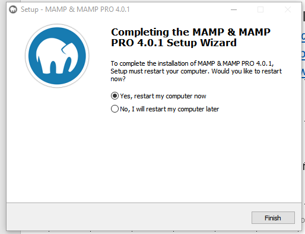
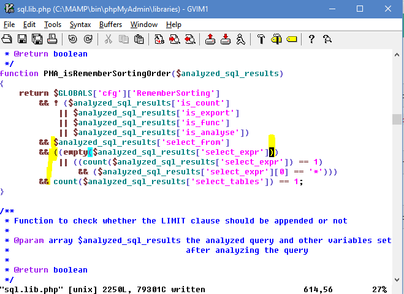

This was first published on https://www.dbi-services.com/blog/installing-mamp-to-play-with-php-mysql-and-openflights/ (2018-06-02)
Republishing here for new followers. The content is related to the versions available at the publication date.
. 
You may wonder what I’m doing with those technologies that are completely different from what I usually do. I’ll detail in a future blog post but the idea is giving a short introduction to databases to students at https://powercoders.org/, a coding academy for refugees in Switzerland. They install MAMP (My Apache – MySQL – PHP) during their curriculum for website development, and then I’ll use this environment to teach data modeling and SQL basics. Thus, I’ve to look at MAMP, PHP and MySQL for the first time… And I decided to load the OpenFlights open data to play with.
That explains the title.
So MAMP is like LAMP (Linux+Apache+PHP+MySQL) but with a M for MacOS, but also Windows (W being an upside-down M after all). Let’s install that on my laptop. I download it from https://www.mamp.info/en/downloads/, run the .exe, all is straightforward and the installer notifies me that the installation will be completed after a reboot.
What? Reboot? Seriously, we are in 2018, that’s Windows 10, I refuse to reboot to install a simple Apache server!
This bundle is very easy to use: a simple window to start and stop the servers (Apache and MySQL) . A setup menu to configure them, but I keep the default. And a link to the start page. All that is installed under C:\MAMP (you can change it, I just kept the default settings). The first time you start the servers, the Windows Firewall configuration is raised and you have to accept it:
With all defaults (Apache on port 80) my web server pages are on http://localhost (serving the files in C:\MAMP\htdocs) and administration page is at http://localhost/MAMP/
The MySQL administration page (phpMyAdmin) is at http://localhost/MAMP/index.php?page=phpmyadmin. It seems that, at least by default, I don’t need a password to go to the admin pages.
I’ll write some PHP and because it’s the first time in my life, I will have some errors. With the default configuration, Apache just raises and Error 500 which does not help me a lot for debugging. This configuration is ok for production because displaying errors may give clues to hackers. But I’m there to play and I want to see the error messages and line numbers.
I have to set display_errors=on for that. The current setting is displayed in http://localhost/MAMP/index.php?language=English&page=phpinfo#module_core and I can change it in C:\MAMP\conf\php7.2.1\php.ini and after a restart of the Apache server I can see full error messages:
Warning: mysqli_real_connect(): (28000/1045): Access denied for user 'root'@'localhost' (using password: YES) in C:\MAMP\htdocs\index.php on line 123
But now that I display the errors, I get this annoying message each time I try to do something in phpMyAdmin (which runs as PHP in the same Apache server):
MAMP "count(): Parameter must be an array or an object that implements Countable"
So this product, which is free but has also a ‘PRO’ version, probably running the same code, is delivered with bad code, raising errors that were ignored. Don’t tell me that it is just a warning. You will see that parentheses are missing, this is a syntax error and raising only a warning for that is quite bad. 
My common sense tells me that we should set display_errors=on and test a few screens before releasing a software. But that step has probably been skipped. Fortunately, the message is clear: line 615 of C:\MAMP\bin\phpMyAdmin\libraries\sql.lib.php
The message is about count() not having the correct parameter. The line 615 shows count($analyzed_sql_results[‘select_expr’] == 1 ) which is probably not correct because it counts a boolean expression. I’ve changed it to (count($analyzed_sql_results[‘select_expr’]) == 1 ) as I suppose they want to count and compare to one.
Well, I’ve never written one line of PHP and I already hate it for its error handling weakness.
I want to initialize the database with some data and I’ll use the OpenFlights database. I’ve downloaded and unzipped https://github.com/jpatokal/openflights/blob/master/sql/master.zip
I go to the unzipped directory and run MySQL:
cd /d D:\Downloads\openflights-master
Another little thing to fix here: the sql\create.sql and sql\load-data.sql files contain some lines starting with “\! echo” but this \! command (to run a system command) exists on Linux but not on the Windows port of MySQL. We have to remove them before running the SQL scripts. I’m used to Oracle where I can port my code and scripts from one platform to the other, and was a but surprised by this.
Ready to connect:
C:\MAMP\bin\mysql\bin\mysql test --port=3306 --host=localhost --user root --password
Enter password:
The MySQL connection parameters are displayed on http://localhost/MAMP/ including the password (root)
source sql\create.sql
mysql> source sql\create.sql
Query OK, 0 rows affected (0.00 sec)
Connection id: 314
Current database: flightdb2
Query OK, 0 rows affected (0.02 sec)
Query OK, 0 rows affected (0.02 sec)
Query OK, 0 rows affected (0.01 sec)
Query OK, 0 rows affected (0.01 sec)
Query OK, 0 rows affected (0.02 sec)
Records: 0 Duplicates: 0 Warnings: 0
Query OK, 0 rows affected (0.02 sec)
Records: 0 Duplicates: 0 Warnings: 0
Query OK, 0 rows affected (0.00 sec)
...
This has created the flightdb2 database, with openflights user, and 15 tables.
Now, if you are still in the unzipped directory, you can load data with the source sql\load-data.sql script which loads from the data\*.dat files
mysql> source sql\load-data.sql
Query OK, 6162 rows affected, 4 warnings (0.04 sec)
Records: 6162 Deleted: 0 Skipped: 0 Warnings: 4
Query OK, 7184 rows affected, 7184 warnings (0.12 sec)
Records: 7184 Deleted: 0 Skipped: 0 Warnings: 7184
Query OK, 67663 rows affected (0.53 sec)
Records: 67663 Deleted: 0 Skipped: 0 Warnings: 0
Query OK, 260 rows affected (0.01 sec)
Records: 260 Deleted: 0 Skipped: 0 Warnings: 0
Query OK, 12 rows affected (0.01 sec)
Records: 12 Deleted: 0 Skipped: 0 Warnings: 0
So, for my first lines of PHP I’ve added the following to C:\MAMP\htdocs\index.php:
<?php
$user = 'openflights'; $password = '';
$db = 'flightdb2'; $host = 'localhost'; $port = 3306;
$conn = mysqli_init();
if (!$conn) {
die("mysqli_init failed");
}
if (!$success = mysqli_real_connect( $conn, $host, $user, $password, $db, $port)) {
die("😠 Connection Error: " . mysqli_connect_error());
}
echo "😎 Connected to database <b>$db</b> as user <b>$user</b>.";
?>
<p>
Here are the Airports:
<table border=1>
<tr><th>IATA</th><th>Name</th></tr>
<?php
$result = $conn->query("select iata,name from airports where country='Greenland' order by 2");
if ($result->num_rows > 0) {
while($row = $result->fetch_assoc()) {
echo "<tr><td>" . $row["iata"]. "</td><td> " . $row["name"]. "</tr>";
}
} else {
echo "0 results";
}
mysqli_close($conn);
?>
</table>
Here, I call mysqli_init(), set the credentials and call mysqli_real_connect() to get the connection handle. Then I run my query and display the result as an HTML table. Nothing difficult here. The main challenge is probably to keep the code maintainable.
In my opinion, and despite the small issues encountered, MAMP is a simple way to setup a development environment on Windows. All is there to introduce SQL and Database for developers, and show how to call it from a programming language.
{kind=link}
{kind=link}
{kind=link}
{kind=link}
{kind=link}